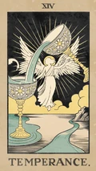

The Chained Pathway is also called the Prisoner Pathway and the Pathway of Mutants. Its canonical progression runs from Prisoner at Sequence 9 to Chained at Sequence 0, with the overview listing mutation, curses, binding, possession, death-related spells, and object control among its abilities.
Pathway progression and late-sequence details contain major story spoilers.Overview
The Chained Pathway is also called the Prisoner Pathway and the Pathway of Mutants. Its canonical progression runs from Prisoner at Sequence 9 to Chained at Sequence 0, with the overview listing mutation, curses, binding, possession, death-related spells, and object control among its abilities.
Paraphrased from the Fandom pathway article..
Complete wiki information
Full main-article information imported from the Chained Pathway wiki article. Existing archive pathway details above are preserved.
The mind is the prisoner of the body, and the body is the prisoner of the world. This refers to the madness that is restrained and the desire that is oppressed.
Overview
The Chained Pathway has different types of mutant abilities, but they're also cursed. They can summon zombies, jump through things with reflections, resist bullets with powerful defence, possess others, control ghosts, cast death-related spells, regenerate and heal themselves, and sacrifice rationality for more power. They have high strength, speed, and defence, but have some difficulty in controlling themselves. They also lose power or control during the full moon.
At High-Sequences, they have the ability to bind their foes, control all inanimate objects within a specific radius, employ dreadful curses and curse others through all connections, and transform into terrifying, evil, distorted, chaotic Abominations that are filled by pure and extreme madness.
Since the Chained Pathway symbolises Binding/Restraint and Unity, from the Mid-Second Epoch onwards, the main Ingredients of each sequence, starting from Sequence 7, have essentially merged into one. There have been almost no more instances of them splitting.[1]
The Beyonder Characteristics of this pathway originated from the Outer Deity Mother Tree of Desire.[2]
The Above the Sequence of the Chained Pathway is the Father of Devils, and the corresponding Sefirah is the Tenebrous World.
Sequence Levels
| Chained Pathway Index | ||
|---|---|---|
| Sequence | Name | |
| Low SequenceSimplified Chinese: 低序列 | ||
| 9 | Prisoner
| |
| 8 | Lunatic
| |
| Mid SequenceSimplified Chinese: 中序列 | ||
| 7 | Werewolf
| |
| 6 | Zombie
| |
| 5 | Wraith
| |
| High SequenceSimplified Chinese: 高序列 - SaintSimplified Chinese: 圣者 | ||
| 4 | Puppet
| |
| 3 | Disciple of Silence[2]
Alternate Name:
| |
| High SequenceSimplified Chinese: 高序列 - AngelSimplified Chinese: 天使 | ||
| 2 | Ancient Bane
| |
| 1 | Abomination[2]
Literal Translation:
| |
| True GodSimplified Chinese: 真神 | ||
| 0 | Chained
| |
Pathway Symbol
The official symbol of the Chained Pathway.[4]
Corresponding Tarot Card

The corresponding tarot card of the Chained Pathway is Temperance.[5]
Temperance (XIV) is the number fourteenth of Major Arcana. The Temperance card is a reference to the soul. It signifies balance, peace, patience, and moderation. One should take the middle road, avoid extremes, and maintain a sense of calm.[6]
Corresponding Ingredients
Browse the local Chained Pathway ingredient archive →
Mythical Creature Form
An invisible collection of various curses. Therefore, the Mythical Creature Form manifested by the Chained Pathway is essentially the vessel that binds this aggregate, and is dependent on the self-awareness and choices made during "Their" advancements to Sequence 4: Puppet and Sequence 2 Ancient Bane, which bind and fixes itself into various curses, such as oil trees, dolls, mummies, etc.[7][8]
- At Sequence 4, an embalmed mummy is one type of anchor, but it's not strictly necessary to use a demigod-level mummy, as any item with a similar function and the same rank can serve the purpose. The Rose School of Thought's Temperance Faction traditionally uses mummies for their advancement, because this practice is tied to the imagery and history of the Chained God and has even influenced the burial customs of the Highlands Kingdom.
- Similarly, the advancement to Ancient Bane requires finding an ancient, evil item capable of bearing angelic power. This item becomes the core of the final Mythical Creature Form.
Innate Mythical Creatures like Suah and Tirié, who have not completed the corresponding Sequence advancements, exhibit forms that are essentially amplifications of "Their" Beyonder Characteristics.[8]
Neighboring and Compatible Pathways
Neighbouring Pathways to the Chained Pathway include:
- Other Pathways under the Father of Devils:
- Pathways under the Mother Tree of Desire:


Compatible Pathways to the Chained Pathway include, but might not be limited to, the following:
- Pathways under the Inextinguishable Ravings:


- Pathways under the Primordial Hunger:
Sequence progression
Sequence titles are retained from the archive; key ability notes are concise paraphrases of the linked source material.
| Seq. | Name | Key abilities |
|---|---|---|
| 9 | Prisoner | Physical enhancement, criminal techniques, and binding of spirituality and desires through restraint. |
| 8 | Lunatic | Can sacrifice rationality so desires run amok, gaining broad strength and resistance to mental disruption. |
| 7 | Werewolf | Werewolf transformation grants extreme strength, speed, regeneration, poisonous claws, darkness effects, and anti-divination. |
| 6 | Zombie | Zombie form provides steel-like defense, ice control, decay effects, and command over the dead. |
| 5 | Wraith | Spirit-form abilities include intangibility, invisibility, possession, mirror travel, Spirit World movement, and soul attacks. |
| 4 | Puppet | Curses can be transferred through linked puppets; users control objects, perform prior roles, and restrain madness. |
| 3 | Disciple of Silence | Prolonged silence brews potent curses; transfiguration curses turn targets into harmless creatures and curses can possess objects. |
| 2 | Ancient Bane | A dwelling place anchors immortality; Bane influences minds and desires, attacks spirits, and exercises curse authority. |
| 1 | Abomination | Curse authority transforms creatures into Deviants, spreads madness and evil, and restrains surroundings with barriers. |
| 0 | Chained | Symbolic authority governs curses, Deviants, Temperance-based binding, and control of sentient or nonsentient objects. |
Pathway themes & abilities
Its central symbolism is Binding and Unity: the pathway concentrates on curses, restraint or Temperance, Deviants, and Objects. The sequence abilities develop mutant transformations, berserk desire, undead and spirit forms, possession, curse-making, and increasingly broad control over restraints and objects.
Sequence-specific highlights are shown in the progression table above.
High-sequence abilities
The upper Sequences change the pathway from a specialist discipline into a domain of angelic and divine authority. The highlights below summarize the progression from Sequence 4 upward; details contain major spoilers.
Sequences 4–3
- Sequence 4 — Puppet: Curses can be transferred through linked puppets; users control objects, perform prior roles, and restrain madness.
- Sequence 3 — Disciple of Silence: Prolonged silence brews potent curses; transfiguration curses turn targets into harmless creatures and curses can possess objects.
Sequences 2–1
- Sequence 2 — Ancient Bane: A dwelling place anchors immortality; Bane influences minds and desires, attacks spirits, and exercises curse authority.
- Sequence 1 — Abomination: Curse authority transforms creatures into Deviants, spreads madness and evil, and restrains surroundings with barriers.
Sequence 0
- Sequence 0 — Chained: Symbolic authority governs curses, Deviants, Temperance-based binding, and control of sentient or nonsentient objects.
Sequence highlights are paraphrased from the Lord of the Mysteries Wiki pathway article.
Novel lore & story appearances
The Chained Pathway’s novel history is bound to the Rose School of Thought: in the early Fifth Epoch, the Chained God founded it, but the Mother Tree of Desire later corrupted him and displaced its worship, turning the school toward indulgence. The ensuing ideological conflict and internal war drove the Temperance survivors—including Sharron, Maric, and Reinette Tinekerr—into flight; they eventually joined the Church of the Fool. In Backlund, Klein first encounters Maric at Bravehearts Bar and hires Sharron as a bodyguard; the pair later help him hunt Rose School members. These events frame the pathway through restraint, factional fracture, and resistance to corruption, not just its powers
Story connections
- The school’s fall and factional split: The Chained God’s corruption shifted the Rose School from its original Temperance outlook toward the Mother Tree of Desire; the Indulgence faction defeated and drove out Temperance members
- Backlund allies become part of Klein’s story: Klein meets Maric at Bravehearts Bar, then hires Sharron as a bodyguard; later he and Sharron assist Sharron and Maric against Rose School members
- Exiles find a new religious home: Sharron, Maric, and other Temperance survivors eventually join the Church of the Fool, maintaining their faction identity
Figures to know
- Chained God (Tolzna)Founder of the Rose School of Thought; corrupted by the Mother Tree of Desire
- Mother Tree of DesireThe corrupting power that supplanted the Chained God in the school’s worship and empowered the Indulgence turn
- SharronChained-pathway Temperance defector, Klein’s hired bodyguard, and later a Church of the Fool member
- MaricChained-pathway Temperance defector who connects Klein with Sharron and becomes one of his Backlund allies
- Reinette TinekerrA named Temperance survivor who fled the Rose School conflict and later joined the Church of the Fool
Major story spoilers. Lore is paraphrased;.
Associated figures
Selected figures listed in the source material:
- Chained God (Tolzna)
- Mother Tree of Desire
- Reinette Tinekerr
- Suah
- Tirié